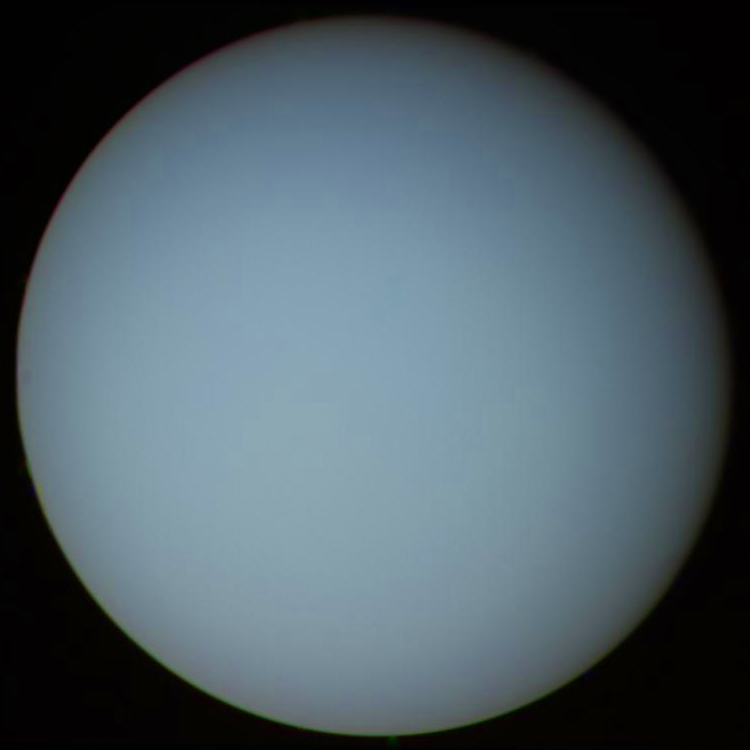

| Орбитальные характеристики |
| Перигелий |
2 748 938 461 км 18,375 518 63 а.е. |
| Афелий |
3 004 419 704 км 20,083 305 26 а.е. |
| Большая полуось (a) |
2 876 679 082 км 19,229 411 95 а.е. |
| Эксцентриситет орбиты (e) |
0,044 405 586 |
| Сидерический период обращения |
30 685,4 земных суток или 84,01 года[1] |
| Синодический период обращения |
369,66 дней |
| Орбитальная скорость (v) |
6,81 км/с |
| Средняя аномалия (Mo) |
142,955717° |
| Наклонение (i) |
0,772556° 6,48° относительно солнечного экватора |
| Долгота восходящего узла (Ω) |
73,989821° |
| Аргумент перицентра (ω) |
96,541318° |
| Чей спутник |
Солнце |
| Спутники |
27 |
| Физические характеристики |
| Полярное сжатие |
0,02293 |
| Экваториальный радиус |
25 559 км |
| Полярный радиус |
24 973 км |
| Средний радиус |
25 362 ± 7 км |
| Площадь поверхности (S) |
8,1156⋅109 км² |
| Объём (V) |
6,833⋅1013 км³ |
| Масса (m) |
8,6813⋅1025 кг 14,54 земных |
| Средняя плотность (ρ) |
1,27 г/см³ |
| Ускорение свободного падения на экваторе (g) |
8,87 м/с² (0,886 g) |
| Вторая космическая скорость (v2) |
21,3 км/c |
| Экваториальная скорость вращения |
2,59 км/с 9 324 км/ч |
| Период вращения (T) |
0,71833 дней 17 ч 14 мин 24 с |
| Наклон оси |
97,77° |
| Прямое восхождение северного полюса (α) |
17 ч 9 мин 15 с 257,311° |
| Склонение северного полюса (δ) |
−15,175° |
| Альбедо |
0,300 (Бонд) 0,51 (геом.) |
| Видимая звёздная величина |
5,9 — 5,32 |
| Угловой диаметр |
3,3"—4,1" |
| Температура |
| мин. сред. макс. |
| уровень 1 бара |
76 K |
| 0,1 бара |
49 K(−224 °C) 53 K(−220 °C) 57 K(−216 °C) |
| Атмосфера |
Состав:
- 83±3 % Водород (H2)
- 15±3 % Гелий
- 2,3 % Метан
Льды:
- аммиачный
- водяной
- гидросульфидно-аммиачный
- метановый
|
|

Снимок «Вояджера-2» в натуральных цветах (1986)
|